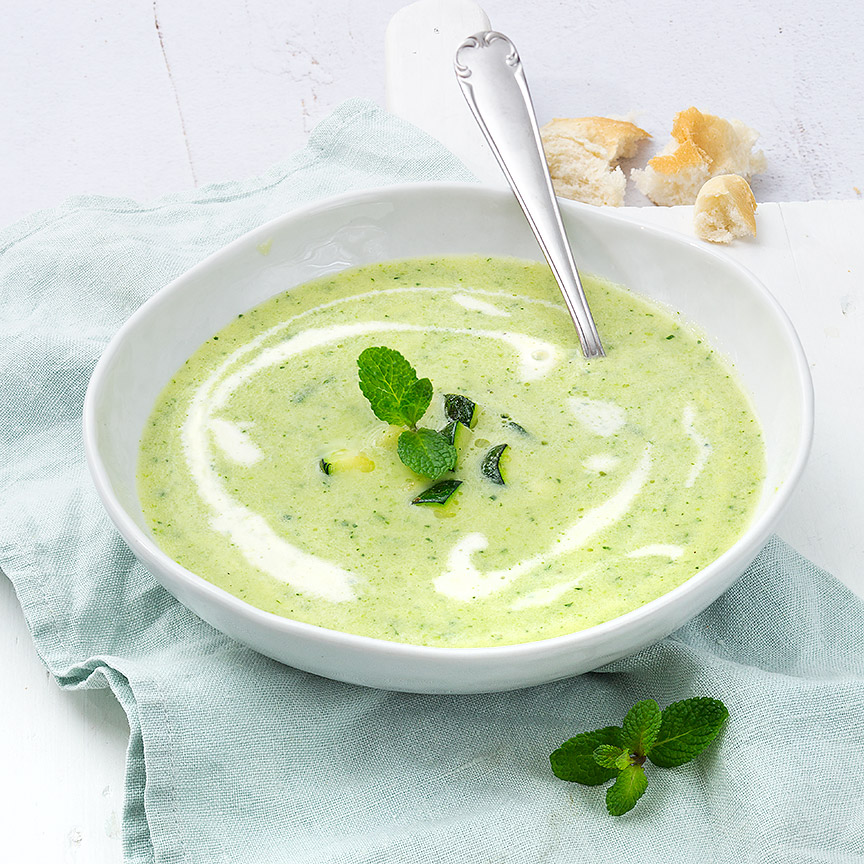

Courgettesoep
Lekkere zelfgemaakte courgettesoep met een vleugje munt en room, klaar in 20 minuten
Ingrediënten
- 1 grote ui
- 2 teentjes knoflook
- 2 courgettes (in blokjes)
- 1 groentebouillonblokje
- 3 takjes verse munt
- 125 ml slagroom
- 800 ml water
- Zout en peper
- scheutje olijfolie
Bereidingswijze
- Verhit de olijfolie in een soeppan en bak de ui glazig. Snijd de knoflook klein en fruit nog 2 min op laag vuur mee. Voeg ook de blokjes courgette toe en bak nog een paar minuten mee
- Voeg het water en de bouillonblokjes toe breng aan de kook. Scheur de blaadjes munt van de takken en hak fijn en voeg toe aan de pan met courgette..
- Zet het vuur uit en pureer de soep met de staafmixer en roer de slagroom er door. Breng de courgettesoep eventueel nog op smaak met wat extra peper en zout en verwarm nog een minuutje door
- Garneer de soep eventueel met een takje munt en wat extra courgetteblokjes.
